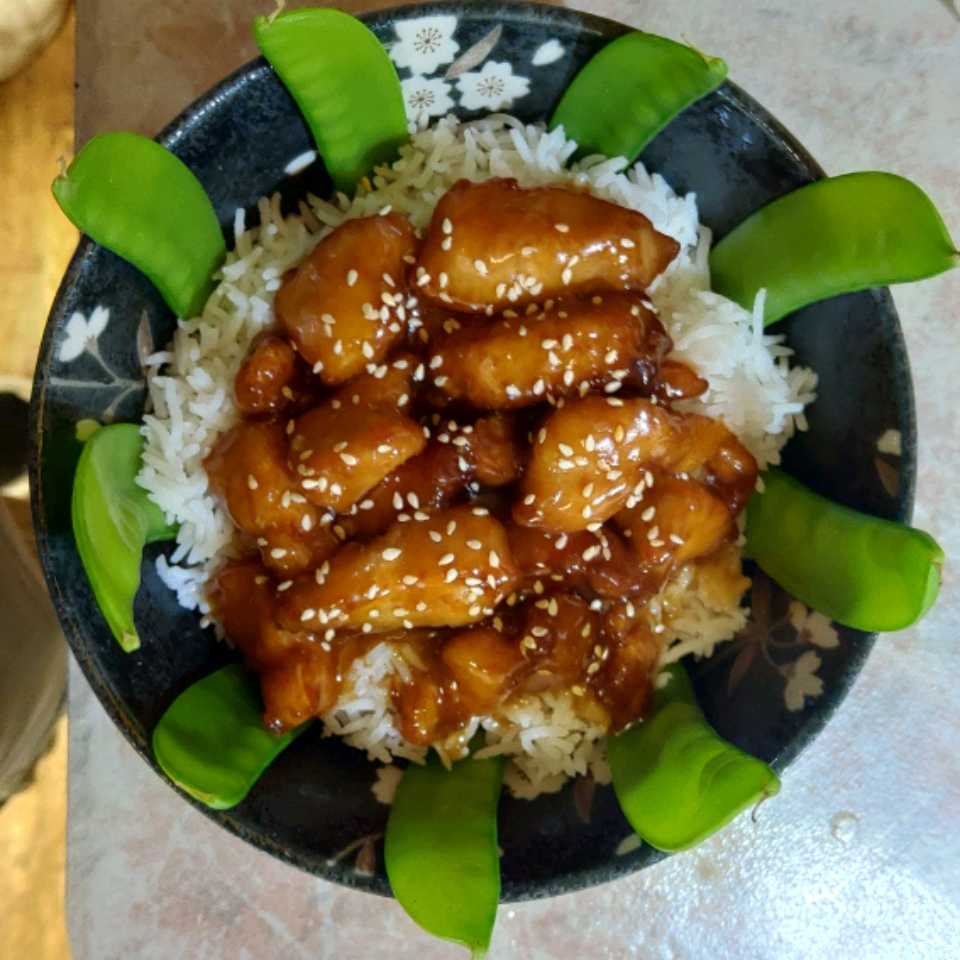

Sesame Chicken

Description
Sesame chicken is an american Chinese dish, it can be found in Chinese restruants all over the United States. The taste of the dish is sweet rather than spicy.
Ingredients
- 2 tablespoons soy sauce
- 1 tablespoon dry sherry
- 1 dash sesame oil
- 2 tablespoons all-purpose flour
- 2 tablespoons cornstarch
- 2 tablespoons water
- 1/4 teaspoon baking powder
- 1/4 teaspoon baking soda
- 1 teaspoon canola oil
- 4(5 ounce) skinless, boneless chicken breast halves, cut into 1-inch cubes
- 1 quart vegetable oil for frying
- 1/2 cup water
- 1 cup chicken broth
- 1/4 cup distilled white vinegar
- 1/4 cup cornstarch
- 1 cup white sugar
- 2 tablespoons soy sauce
- 2 tablespoons sesame oil
- 1 teaspoon red chile paste
- 1 clove garlic, minced
- 2 tablespoons toasted sesame seeds
Steps
- Combine the 2 tablespoons soy sauce, the dry sherry, dash of sesame oil, flour, 2 tablespoons cornstarch, 2 tablespoons water, baking powder, baking soda, and canola oil in a large bowl. Mix well; stir in the chicken. Cover and refrigerate for 20 minutes.
- Heat oil in a deep-fryer or large saucepan to 375 degrees F (190 degrees C).
- Combine the 1/2 cup water, chicken broth, vinegar, 1/4 cup cornstarch, sugar, 2 tablespoons soy sauce, 2 tablespoons sesame oil, red chili paste, and garlic in a small saucepan. Bring to a boil, stirring constantly. Turn heat to low and keep warm, stirring occasionally.
- Fry the marinated chicken in batches until cooked through and golden brown, 3 to 5 minutes. Drain on paper towels.
- Transfer the chicken to a large platter, top with sauce, and sprinkle with sesame seeds.